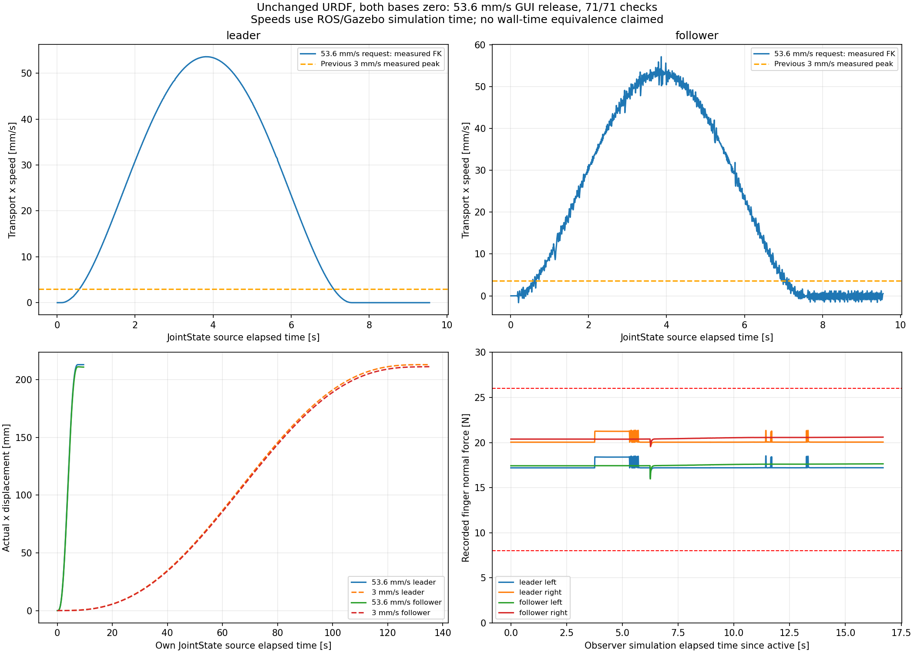
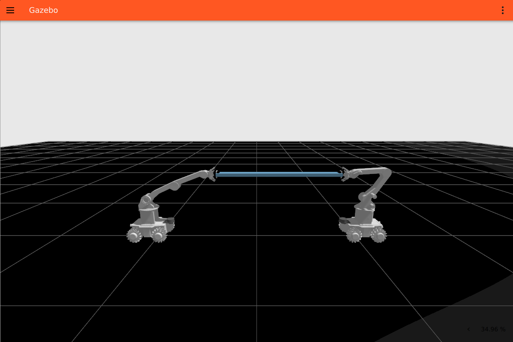

既定ピーク要求 3→53.6 mm/s（約17.9倍）。移動213 mm。URDF変更なし。把持後の両台車指令ゼロ。
最終GUIは71/71項目合格。Leader実測ピーク53.600 mm/s、Follower 57.144 mm/s。接触継続・停止後把持保持を確認し、移動中停止試験も合格しています。速度はシミュレーション時刻による値です。


実停止・把持確認後に物理を一時停止した画面です。
cd ~/ros2_humble_ws source /opt/ros/humble/setup.bash source install/setup.bash ros2 launch cooperative_transport_bringup compliance_round_trip.launch.py \ headless:=false gui_nvidia_offload:=true record_data:=true \ dual_arm_speed_m_s:=0.0536移動中停止・把持保持 / 変更ファイル / 差分 / URDF不変確認